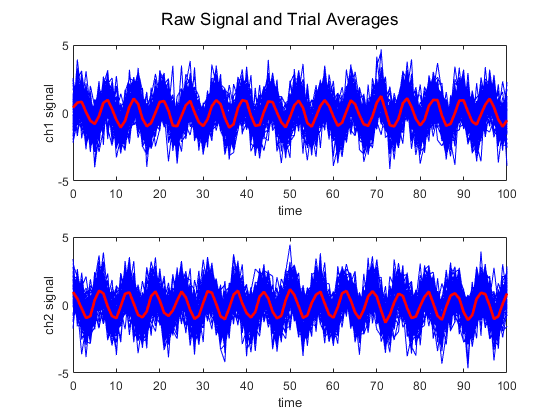
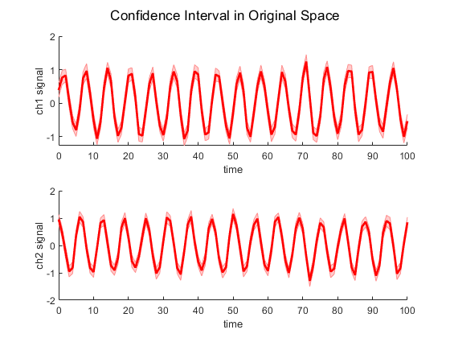
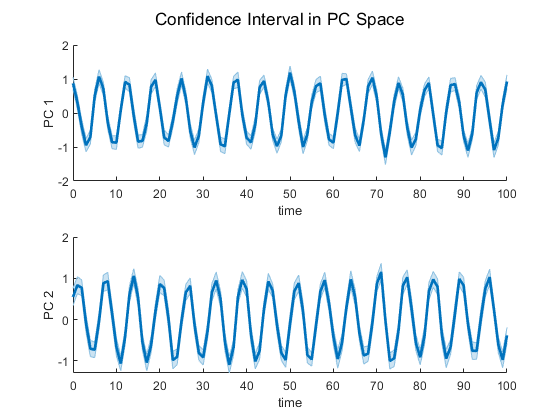
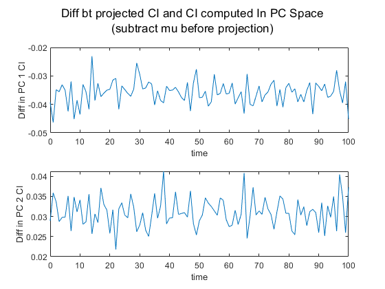
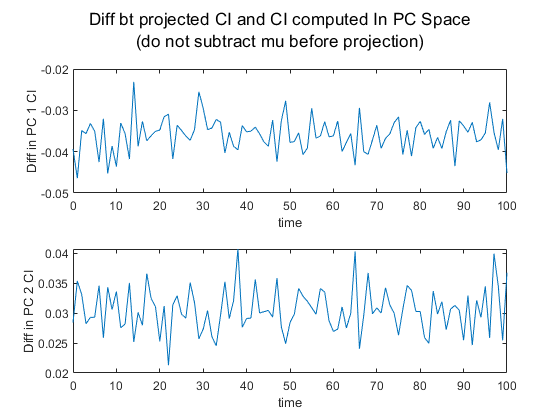

Contents
- Generate some data (sines and cosines plus noise)
- Take trial averages
- Make sure data looks ok
- Get confidence intervals in original space; plot with trial avgs
- Do PCA on Trial Averages
- Get confidence intervals in PC space, plot w PC avgs
- Project CI into PC space; ask if equal to CI computed in PC space; plot differences to be sure
- Maybe you're not supposed to subtract mu first, since the CI is more like a distance than a location.
clear; clc; close all
Generate some data (sines and cosines plus noise)
numTrials = 100;
time = 0:1:100;
numTimesteps = length(time);
for trial = 1:numTrials
data(:,1,trial) = sin(time)'+normrnd(0,1,numTimesteps,1);
data(:,2,trial) = cos(time)'+normrnd(0,1,numTimesteps,1);
end
Take trial averages
trialAvg = mean(data,3);
Make sure data looks ok
figure
for trial = 1:numTrials
subplot(2,1,1)
plot(time,data(:,1,trial),'b')
hold on
subplot(2,1,2)
plot(time,data(:,2,trial),'b')
hold on
end
subplot(2,1,1)
plot(time,trialAvg(:,1),'r','LineWidth',2)
xlabel('time')
ylabel('ch1 signal')
subplot(2,1,2)
plot(time,trialAvg(:,2),'r','LineWidth',2)
xlabel('time')
ylabel('ch2 signal')
sgtitle('Raw Signal and Trial Averages')
 Get confidence intervals in original space; plot with trial avgs
CI = 1.96*std(data,0,3)./sqrt(numTrials);
figure
subplot(2,1,1)
shadedErrorBar(time,trialAvg(:,1),CI(:,1),'lineprops',{'LineWidth',2,'Color','r'})
xlabel('time')
ylabel('ch1 signal')
subplot(2,1,2)
shadedErrorBar(time,trialAvg(:,2),CI(:,2),'lineprops',{'LineWidth',2,'Color','r'})
xlabel('time')
ylabel('ch2 signal')
sgtitle('Confidence Interval in Original Space')
 Do PCA on Trial Averages
[coeff,score,latent,tsquared,explained,mu] = pca(trialAvg);
%Project all data into PC space
PCProj = NaN(size(data));
for trial = 1:numTrials
PCProj(:,:,trial) = (data(:,:,trial)-mu)*coeff;
end
%Project trial averages into PC space
trialAvgPCProj = (trialAvg-mu)*coeff;
Get confidence intervals in PC space, plot w PC avgs
PCCI = 1.96*std(PCProj,0,3)./sqrt(numTrials);
figure
subplot(2,1,1)
shadedErrorBar(time,trialAvgPCProj(:,1),PCCI(:,1),'lineprops',{'LineWidth',2})
xlabel('time')
ylabel('PC 1')
subplot(2,1,2)
shadedErrorBar(time,trialAvgPCProj(:,2),PCCI(:,2),'lineprops',{'LineWidth',2})
xlabel('time')
ylabel('PC 2')
sgtitle('Confidence Interval in PC Space')
 Project CI into PC space; ask if equal to CI computed in PC space; plot differences to be sure
CIToPCCI = (CI-mu)*coeff;
isequal(CIToPCCI,PCCI)
differenceInCI = CIToPCCI-PCCI;
figure
subplot(2,1,1)
plot(time,differenceInCI(:,1))
xlabel('time')
ylabel('Diff in PC 1 CI')
subplot(2,1,2)
plot(time,differenceInCI(:,2))
xlabel('time')
ylabel('Diff in PC 2 CI')
sgtitle(['Diff bt projected CI and CI computed In PC Space',newline,...
'(subtract mu before projection)'])
ans = logical 0
Maybe you're not supposed to subtract mu first, since the CI is more like a distance than a location.
Nope, that didn't work, either
CIToPCCInoMu = (CI)*coeff;
isequal(CIToPCCInoMu,PCCI)
differenceInCINoMu = CIToPCCInoMu-PCCI;
figure
subplot(2,1,1)
plot(time,differenceInCINoMu(:,1))
xlabel('time')
ylabel('Diff in PC 1 CI')
subplot(2,1,2)
plot(time,differenceInCINoMu(:,2))
xlabel('time')
ylabel('Diff in PC 2 CI')
sgtitle(['Diff bt projected CI and CI computed In PC Space',newline,...
'(do not subtract mu before projection)'])
ans = logical 0